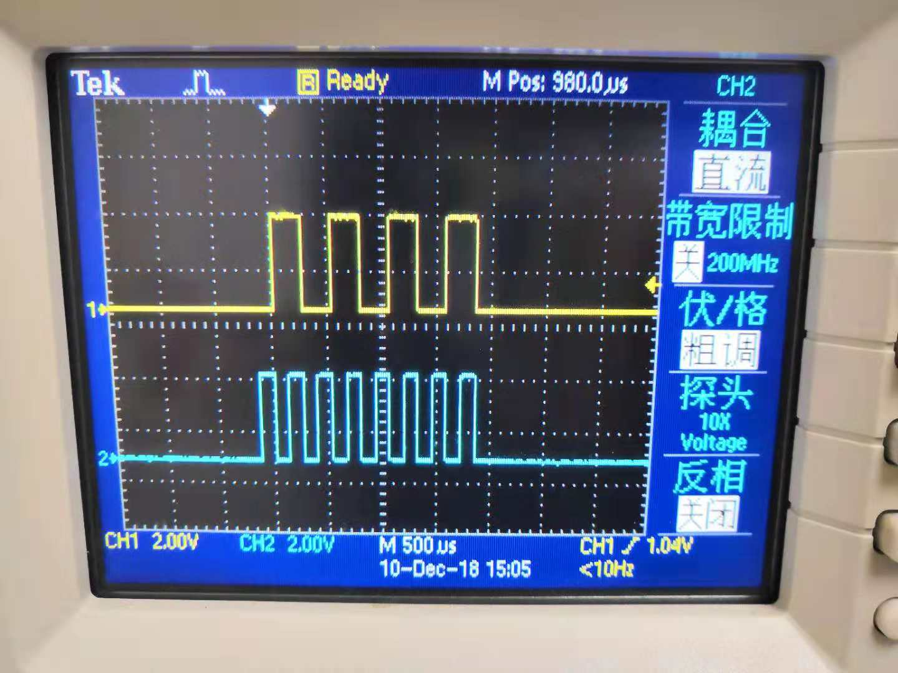

spi tools
测试SPI基本通信
参考文档
基本操作
在
raspi-config命令中打开SPI功能就行了，树莓派Linux系统会利用设备树Overlays将SPI引脚进行复用选择，注意需要重启；树莓派上会生成2个SPI的设备节点，对应两个SPI片选设备：
pi@raspberrypi:~ $ ls /dev/spi* /dev/spidev0.0 /dev/spidev0.1
-
pi@raspberrypi:~/zengjf/spi-tools-master $ autoreconf -fim configure.ac:13: installing './compile' configure.ac:7: installing './install-sh' configure.ac:7: installing './missing' src/Makefile.am: installing './depcomp' pi@raspberrypi:~/zengjf/spi-tools-master $ ./configure checking for a BSD-compatible install... /usr/bin/install -c checking whether build environment is sane... yes checking for a thread-safe mkdir -p... /bin/mkdir -p checking for gawk... no checking for mawk... mawk checking whether make sets $(MAKE)... yes checking whether make supports nested variables... yes checking whether to enable maintainer-specific portions of Makefiles... no checking whether make sets $(MAKE)... (cached) yes checking for gcc... gcc [...省略] configure: Debug Mode off. checking for help2man... echo No help2man checking that generated files are newer than configure... done configure: creating ./config.status config.status: creating Makefile config.status: creating src/Makefile config.status: creating man/Makefile config.status: creating src/config.h config.status: executing depfiles commands pi@raspberrypi:~/zengjf/spi-tools-master $ make Making all in src make[1]: Entering directory '/home/pi/zengjf/spi-tools-master/src' make all-am make[2]: Entering directory '/home/pi/zengjf/spi-tools-master/src' gcc -DHAVE_CONFIG_H -I. -O0 -MT spi-config.o -MD -MP -MF .deps/spi-config.Tpo -c -o spi-config.o spi-config.c mv -f .deps/spi-config.Tpo .deps/spi-config.Po gcc -O0 -o spi-config spi-config.o gcc -DHAVE_CONFIG_H -I. -O0 -MT spi-pipe.o -MD -MP -MF .deps/spi-pipe.Tpo -c -o spi-pipe.o spi-pipe.c mv -f .deps/spi-pipe.Tpo .deps/spi-pipe.Po gcc -O0 -o spi-pipe spi-pipe.o make[2]: Leaving directory '/home/pi/zengjf/spi-tools-master/src' make[1]: Leaving directory '/home/pi/zengjf/spi-tools-master/src' Making all in man make[1]: Entering directory '/home/pi/zengjf/spi-tools-master/man' make[1]: Nothing to be done for 'all'. make[1]: Leaving directory '/home/pi/zengjf/spi-tools-master/man' make[1]: Entering directory '/home/pi/zengjf/spi-tools-master' make[1]: Nothing to be done for 'all-am'. make[1]: Leaving directory '/home/pi/zengjf/spi-tools-master' pi@raspberrypi:~/zengjf/spi-tools-master $ sudo make install Making install in src make[1]: Entering directory '/home/pi/zengjf/spi-tools-master/src' make[2]: Entering directory '/home/pi/zengjf/spi-tools-master/src' /bin/mkdir -p '/usr/local/bin' /usr/bin/install -c spi-config spi-pipe '/usr/local/bin' make[2]: Nothing to be done for 'install-data-am'. make[2]: Leaving directory '/home/pi/zengjf/spi-tools-master/src' make[1]: Leaving directory '/home/pi/zengjf/spi-tools-master/src' Making install in man make[1]: Entering directory '/home/pi/zengjf/spi-tools-master/man' make[2]: Entering directory '/home/pi/zengjf/spi-tools-master/man' make[2]: Nothing to be done for 'install-exec-am'. /bin/mkdir -p '/usr/local/share/man/man1' /usr/bin/install -c -m 644 spi-config.1 spi-pipe.1 '/usr/local/share/man/man1' make[2]: Leaving directory '/home/pi/zengjf/spi-tools-master/man' make[1]: Leaving directory '/home/pi/zengjf/spi-tools-master/man' make[1]: Entering directory '/home/pi/zengjf/spi-tools-master' make[2]: Entering directory '/home/pi/zengjf/spi-tools-master' make[2]: Nothing to be done for 'install-exec-am'. make[2]: Nothing to be done for 'install-data-am'. make[2]: Leaving directory '/home/pi/zengjf/spi-tools-master' make[1]: Leaving directory '/home/pi/zengjf/spi-tools-master'
spi-config帮助：pi@raspberrypi:~/zengjf/spi-tools-master $ spi-config -h usage: spi-config options... options: -d --device=<dev> use the given spi-dev character device. -q --query print the current configuration. -m --mode=[0-3] use the selected spi mode: 0: low idle level, sample on leading edge, 1: low idle level, sample on trailing edge, 2: high idle level, sample on leading edge, 3: high idle level, sample on trailing edge. -l --lsb={0,1} LSB first (1) or MSB first (0). -b --bits=[7...] bits per word. -s --speed=<int> set the speed in Hz. -r --spirdy={0,1} consider SPI_RDY signal (1) or ignore it (0). -w --wait block keeping the file descriptor open to avoid speed reset. -h --help this screen. -v --version display the version number.获取当前SPI接口信息：
pi@raspberrypi:~/zengjf/spi-tools-master $ spi-config -d /dev/spidev0.0 -q /dev/spidev0.0: mode=0, lsb=0, bits=8, speed=125000000, spiready=0
Note: on some platforms, the speed is reset to a default value when the file descriptor is closed. To avoid this, one can use the -w option that keep the file descriptor open.
树莓派的SPI在关闭SPI设备描述符之后会恢复原来的值，所以需要使用上面的打开文件描述符后台运行的方式解决；
pi@raspberrypi:~/zengjf/spi-tools-master $ spi-config -d /dev/spidev0.0 -s 10000000 -w & [1] 3416 pi@raspberrypi:~/zengjf/spi-tools-master $ spi-config -d /dev/spidev0.0 -q /dev/spidev0.0: mode=0, lsb=0, bits=8, speed=10000000, spiready=0
spi-pipe帮助：pi@raspberrypi:~/zengjf/spi-tools-master $ spi-pipe -h usage: spi-pipe options... options: -d --device=<dev> use the given spi-dev character device. -s --speed=<speed> Maximum SPI clock rate (in Hz). -b --blocksize=<int> transfer block size in byte. -n --number=<int> number of blocks to transfer (-1 = infinite). -h --help this screen. -v --version display the version number.解读
spi-pipe发送数据部分代码：// int blocksize = 1; // int blocknumber = -1; while ((blocknumber > 0) || (blocknumber == -1)) { // 循环多少个块 for (offset = 0; offset < blocksize; offset += nb) { nb = read(STDIN_FILENO, & (tx_buffer[offset]), blocksize - offset); // 从标准输入读取一块字节 if (nb <= 0) break; } if (nb <= 0) break; if (ioctl(fd, SPI_IOC_MESSAGE(1), & transfer) < 0) { // 发送数据块 perror("SPI_IOC_MESSAGE"); break; } if (write(STDOUT_FILENO, rx_buffer, blocksize) <= 0) // 将当前块数据写到标准输出 break; if (blocknumber > 0) blocknumber --; }
如上，如果需要发送二进制数据，参考: How to write binary data in bash
printf '\x03' > file # Hex printf '\003' > file # Octal
printf '\x55' | spi-pipe -d /dev/spidev0.1 -s 1000
硬件上短接MOSI/MISO，在使用的时候数据能收到，只是貌似spi-pipe往标准输出打印内容的时候有点问题，将下面语句放在脚本内执行是可行的；
printf "\x55" | ./spi-pipe -d /dev/spidev0.0 -s 100 | hexdump0000000 0055 0000001